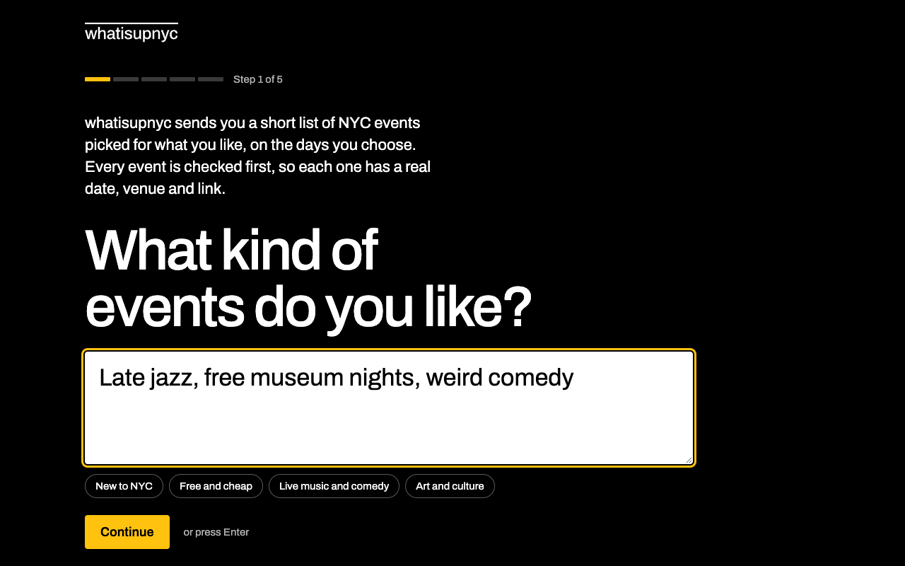
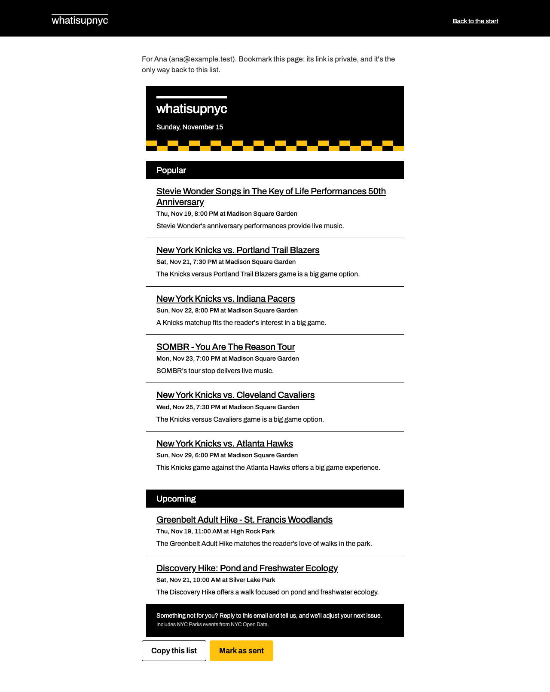

The product
Current Status: Build 3: live at whatisupnyc.com for anyone, with reader accounts (email and password) instead of the pod password. A reader answers one question at a time, chooses a password, and sees their first list right away; the AI picks it from events collected and checked each morning. Security audit: SECURITY.md.
Demo: The start page, the "Making your list…" screen while the AI picks, and a real list made on November 15.


Living PRD
1. Target User & The Job to Be Done
Who is this for? New Yorker (Pod members and friends) especially people who are not from New York, so it is a new city to explore.
The painful "Before" workflow: The information is scattered across many sites and apps. Even on platforms like Instagram, Tiktok, etc. many events are not right for a given person, so they spend time checking and still miss things.
The "After" workflow with this product: They say what they like in one bar or pick a template, then choose their days. They get a short list of checked events, each with a date, venue, link, and one line on why it fits.
2. Scope & Explicit Non-Goals
- In Scope (Core Workflow): Describe what you like, pick your days, and get a newsletter of checked NYC events.
- Out of Scope #1: Other cities. NYC only.
- Out of Scope #2: Full design control. Prompts change simple things like tone and categories, not layout.
- Out of Scope #3: Selling tickets or social features. The newsletter links out to each event's page.
3. How It Works Under the Hood & Riskiest Assumption (Week 2+)
Riskiest Assumption: That people act on it. Friends may already be the best filter, so the real test is whether readers actually go to an event they would not otherwise have found. On the technical side, few event sources allow automated collection, which limits variety.
How this build tests it: For now, the main number is how many people sign up for the newsletter. Sign-up is now one step at a time, so PostHog shows the step where people leave. Clicks on events are tracked on the newsletter page, but not yet from the email; that's next, by sending email links through whatisupnyc.com first. Whether people actually go is hard to measure at scale, so for now I'll ask my pod, and later add a one-click "Did you go?" question to each issue.
Simple Architecture: Each morning: event feeds (Ticketmaster, NYC Parks, NYU Engage, National Park Service, the NYC Events Calendar, 13 museum and venue calendars), allowed web pages, and pasted posts → plain-code checks → scoring (official feeds, events on several feeds, coverage) → saved. When a reader asks: the best 150 upcoming events, at most 50 from one source → AI picks from those only → code confirms each pick → newsletter
4. Hosting, Database & Security (Build 3)
- Hosting: a VPS (virtual private server) running the FastAPI app behind Caddy, which handles HTTPS. Chosen over Render or Vercel because the daily collector runs for about 10 minutes every morning, and the server was already set up. Deploys follow written steps in
AGENTS.md, each starting with a backup, and can be rolled back. - Database: Supabase Postgres, moved from a SQLite file on 2026-11-22. Two projects keep testing apart from the live site: dev and production. Table changes are SQL migration files in git, tried on dev before production. The free plan has no automatic backups, so every deploy starts with a database dump.
- Accounts: Supabase Auth with email and password, called only by our server; the browser never talks to Supabase. The login is kept in cookies that page scripts can't read. Confirm and reset emails come from our own address through Resend.
- Who can see what: Row Level Security is on for every table. A reader can read only their own preferences, and the server reads them under that reader's identity, so a bug in our code still can't show one reader another's list. Tested on production by signing in as one account and trying to read another's data through Supabase's public API: blocked.
- Keys: secret keys live only in the server's settings file and the builder's
.env; a search of the repo, its history, and the live site found none. The site uses only Supabase's public key. - Abuse and cost limits: per-visitor and per-account rate limits on sign-up, sign-in, password resets, pasted posts and the list page (which calls the AI), sized so a whole class on one Wi-Fi network can sign up. The AI stays capped at 50 requests a day.
- Choice I made: a new reader sees their first list before confirming their email, because waiting for an email loses people. The cost is that sign-up shows whether an email already has an account; that's acceptable for an events list.
5. Unit Economics & Analytics Snapshot (Updated Weekly)
Cost per run, worked out: one list is one AI request: about 4,500 tokens in (the 150 events) and up to about 2,000 out. On the free OpenRouter model that costs $0. When it is busy, the MiniMax-M3 backup answers at $0.30–$0.60 per million tokens in and $1.20–$2.40 out (my MiniMax bill matches the lower $0.30 / $1.20 rate), so about $0.004 a list. The app makes at most 50 AI requests a day, so the backup can't cost more than about $0.20 a day. Collecting events uses free API tiers.
Weekly build log
Build 3 · Go Live & Security Audit (Due Nov 23)
- What shipped: The data moved from a SQLite file on the server to Supabase Postgres on 2026-11-22, the first step toward reader accounts. Two Supabase projects keep testing apart from the live site: dev and production. Row Level Security is on for every table, with no rules that let the public API in, and a test with the public key confirmed it could not read or change anything. All 1041 events, 151 dropped events, 15 readers and their private newsletter links moved over unchanged; the site was down about five minutes. Tests now run on a local Postgres and refuse to run against any other database, because their setup wipes it. Supabase's free plan has no automatic backups, so each deploy now starts with a database dump.
- What shipped (accounts): On 2026-11-23 the shared site password came off. Anyone can open whatisupnyc.com, and readers make an account with email and password through Supabase Auth, which only our server talks to. Each reader's preferences sit in a table whose Row Level Security lets only that reader read them; a test on production, signed in as account B through Supabase's public API, could not read, change or add to account A's data. Confirm and reset emails come from our own sender (Resend) and open a page with a button, so mail scanners can't use the link up; confirming also sets the password and ends every other login, so nobody can take over an account by signing up with someone else's email. Every route that calls the AI or saves data has a per-visitor rate limit, sized for a classroom on one Wi-Fi network, with tighter limits per account. The 5 readers from before accounts got confirmed accounts and keep their preferences; they set a password with "Forgot password".
- What shipped (saved lists): Each reader's list is now made by the AI at most once a New York day, or right after they edit their preferences, and saved. Opening it again, signing in, or resetting a password shows the saved list in seconds instead of waiting about a minute for the AI each time; reloading no longer spends the daily AI budget. Readers can edit their name, interests, extra wishes and days on a new preferences page, and a "Making your list" screen covers the wait when a new list is being made. Only the server writes saved lists, and a reader can read only their own; tested on production through Supabase's public API.
- What shipped (dashboard and sharing): The list page is now a full-width dashboard: each event has a picture (from its feed or its page's link preview), Save for later, Share, and a "More like this" tick that makes a new list from the events a reader picks. Saved events and 1-to-5 ratings of events they went to are sent to the AI, so later lists lean toward what they loved. Sharing opens a public page for that one event with a link preview, and a reader can send themselves a compact email version of their list. Readers can only read and remove their own saves and ratings; the server writes them after checking the event was on that reader's lists; tested on production through Supabase's public API.
- Security audit: All seven checks are written up in SECURITY.md.
- Signed in as account B, Supabase's public API refused every attempt to read or change account A's data.
- No secret keys turned up in the repo, its history, or the live site.
- The app stores no files.
- The deploy started with backups, and the agent works on the dev database.
- Rate limits cover every route that calls the AI or saves data, and the AI stays capped at 50 requests a day.
pip-auditis clean after one upgrade.- An agent review found an account-takeover path, fixed before launch: someone could sign up with your email and their own password, and keep it after you confirmed.
- Things learned with AI: Moving off a shared password is mostly about the cases nobody plans for: an email already taken, a confirm link a mail scanner opens first, a login that expires halfway through a slow page, a whole class on one Wi-Fi address. Row Level Security is worth testing the way an attacker would, through the public API with the public key, not just trusted because it's switched on. A free Supabase project's settings can live in git and be pushed to dev and production the same way, which beats clicking through two dashboards.
- What broke / changed in PRD:
- My database password had symbols that broke the connection string, and the agent's attempt to hide it printed part of it, so I reset it. It also printed an old-style Supabase admin key, so those keys are now off on both projects.
- SSH to the server failed after I switched MacBooks, until a new Touch ID key was added.
- Supabase won't let free projects change their email templates without your own email sender, so Resend had to be set up before sign-up could work at all.
- The first rate limits would have blocked the sixth classmate signing up from campus Wi-Fi.
- PRD: a new Hosting, Database & Security section, and the status now says the site is open with accounts.
- Cost & time this week: $37.84 of Claude Code usage as reported by /usage, $0.00 on Supabase, Resend and hosting (free plans), about $0 on the AI backup · around 3 hours
Build 2 · Plan.md & Smallest Local Version & PostHog (Due Nov 16)
- What shipped: PostHog analytics on this Product Page and in the local app: pageviews, clicks, and session replay. In the app, newsletter links are private, so the token is replaced with
:tokenbefore any event leaves the browser, newsletter pages are not recorded, and typed text is hidden in replays. A paid backup AI model, MiniMax-M3, now answers when the free OpenRouter model is busy or fails; it answers in about a second instead of about 40, and the 50-requests-a-day limit caps its cost. New event source: NYU Engage, NYU's public student-events feed, read from its RSS feed because robots rules block its API. Of about 830 events in the next 30 days, it keeps about 385: club meetings, rehearsals, cancelled events, and online events are filtered out. Engage events count as an official listing. New source: the public event calendars of 13 NYC museums, venues and campuses that share one WordPress calendar format, such as the Museum of the Moving Image, St. Ann's Warehouse, and Hunter College. Of about 300 listings in the next 30 days, about 150 are kept: volunteer shifts, members-only, kids-only, fitness classes, online, and cancelled events are left out, and a show with many performances counts once, at its next date. New source: free ranger programs from the National Park Service's API in the city's national parks, like Jamaica Bay walks and Theodore Roosevelt Birthplace house tours; about 19 a month, with Sandy Hook (in New Jersey) and kids' programs left out. New source: the city's official NYC Events Calendar, read only for its free, holiday, cultural and general events; it adds about 9 a month, like the Macy's parade and its balloon inflation, because most of the calendar is greenmarkets, traffic notices, city services, and park events we already get from NYC Parks. - Ranking changes: Engage club events are worth 10 points instead of 20, so they rank below city events. An event listed by more than one feed earns 10 more points for each extra feed. The AI now sees at most 50 events from any one source, so a big source can't fill all 150 slots before the reader's interests are considered: before this, one test newsletter had 7 of 8 picks from Engage, and with Engage at 10 and no limit, NYC Parks would have filled 125 of the 150 slots.
- Start page: The start page now opens with a short explanation and a big "What kind of events do you like?" box, then asks one question at a time (days, name, email, an optional style note) with a progress bar and Back link, and PostHog records which step people reach without recording what they type. After trying it on whatisupnyc.com: a "Making your list…" screen now covers the wait while the AI picks, and adding a social media post saves it in under a second instead of checking it on the spot (which could take a minute and reset the steps). Readers can add several posts without losing their place, and the next morning's collection run checks them.
- Things learned with AI: Security is an issue to pay attention to: one user's information must never reach another user, and each user has to be treated individually. Getting event sources and following their terms and conditions is hard.
- What broke / changed in PRD: PostHog was first installed on this Product Page instead of the live app, so it had to be added to whatisupnyc.com. On the live site, adding a social media post took up to a minute and reset the sign-up steps, so posts are now saved and checked the next morning. NYU Engage club events crowded out everything else until the ranking changes. My first commits silently failed because a
!in zsh negated the command. PRD: the riskiest assumption now has a test (sign-ups and where people drop off), the architecture lists every source, and the cost per run is worked out. - Cost & time this week: $37.62 of Claude Code usage as reported by /usage, $0.0003 on the MiniMax backup (two test calls; every real list so far came from the free model), $0.00 on other APIs · around 3–4 hours
Build 1 · Intent.md & Throwaway Prototype (Due Nov 9)
- What shipped: A local prototype: automatic collection from Ticketmaster and web pages, event checks, backend scoring, AI picks from checked events, and a paste box for social finds. The database holds 34 eligible events from four sources: Ticketmaster 24, The Skint 5, doNYC 3, and Eventbrite 2. Secret NYC and Luma added none. One issue is shown above. Most eligible events are big ticketed Ticketmaster shows, because the other sources added few events. That skew is the main known weakness.
- Things learned with AI:
- AI won't find the idea for you. When I asked what to build, it gave generic answers. I had to come up with the idea myself and then challenge it.
- AI plays it safe. It tends to be strict about laws and rules, so I have to decide for myself how to handle those limits.
- Getting data is hard. Collecting events from social media is a legal gray area, and there is too much data out there to collect it all, so I had to research first where the AI should crawl.
- AI can overdo it. It guesses what other tasks should be done and starts doing them. That would be great for real production work, but since this project is for learning, I need to instruct the AI to tell me what it suggests instead of just doing it.
- What broke / changed in PRD: Secret NYC, doNYC, and Eventbrite have terms that ban automated collection, and Luma's terms are unclear. I chose to include them for this class project, and they must be reviewed before any commercial use. TikTok, Instagram, and RedNote stay as pasted links, because reaching them automatically would take login bots or block workarounds. Testing on real data caught paid ads being treated as events, Ticketmaster returning only the next two days, and pasted posts never being confirmed. Finding a reliable source of events is not as easy as I thought.
- Cost & time this week: $25.18 of Claude Code usage as reported by /usage before the final steps, plus $0.00 on APIs and hosting (free tiers) · around 3 hours in total build time